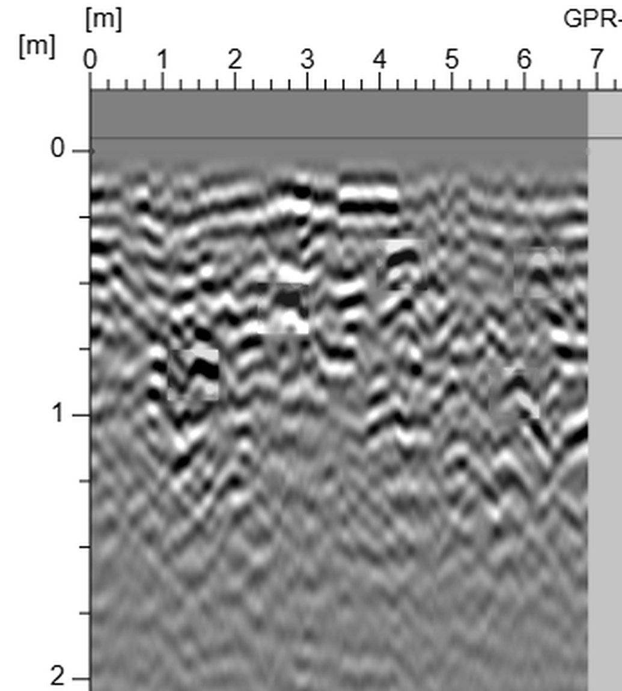
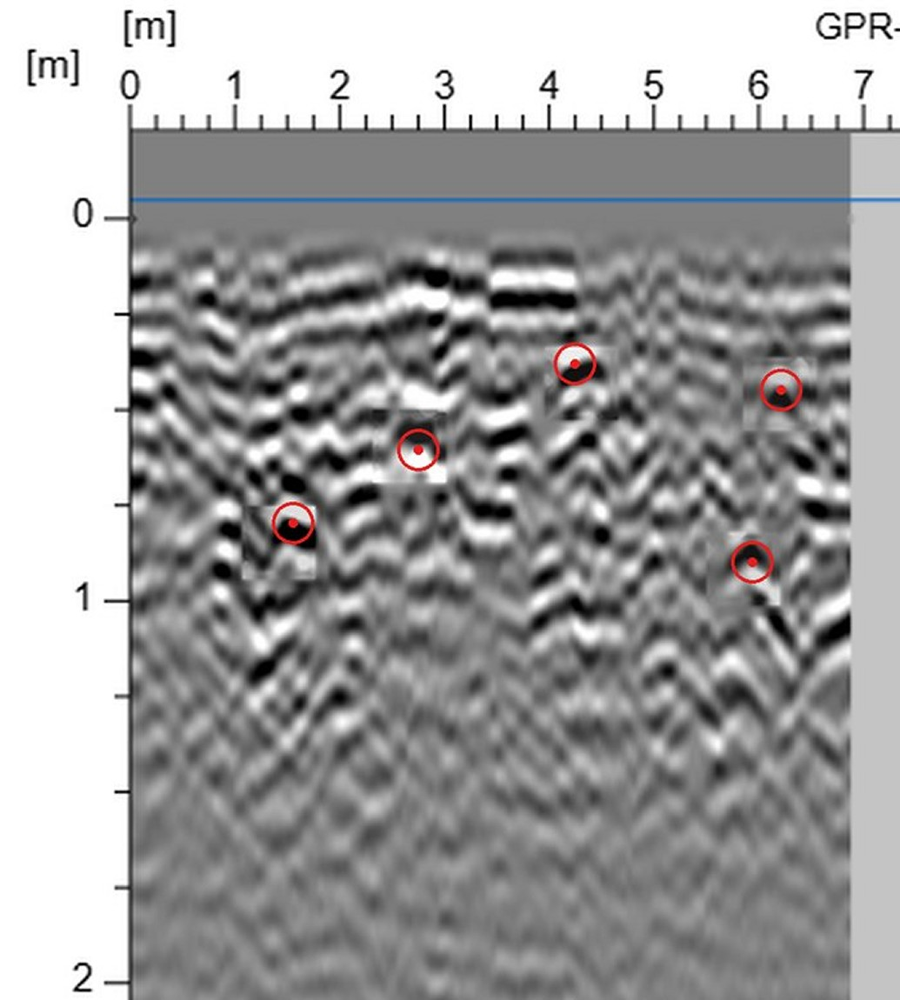
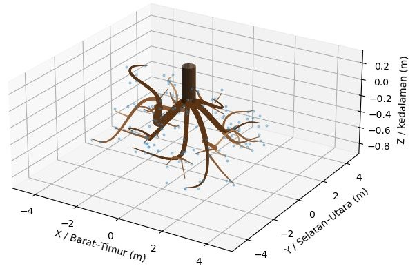

Judul penelitianPengembangan Model Deteksi dan Rekonstruksi Arsitektur Akar Pohon Berbasis Ground Penetrating Radar Menggunakan Blended Feature Extraction dan GCN–GAN
Akar menahan pohon tetap berdiri, tetapi tersembunyi di bawah tanah. Penelitian ini memakai alat ground penetrating radar (GPR) dan computer vision untuk melihat akar pohon Agathis dalam tiga dimensi, tanpa merusaknya.
Akar menjadi salah satu faktor penopang stabilitas pohon.
Tajuk yang besar menangkap angin seperti layar. Akar bekerja seperti jangkar yang menahan pohon agar tidak roboh.
Seberapa jauh akar menyebar, seberapa dalam, dan ke arah mana ia tumbuh menentukan seberapa kokoh pohon berdiri.
Kita tidak bisa melihat akar tanpa membuka tanah.
Akar terpotong, pohon terganggu, dan hanya sebagian kecil yang terlihat.
Ground Penetrating Radar (GPR) mengirim gelombang ke dalam tanah dan mendengarkan pantulannya. Tidak ada yang digali.
Alat: GPR MIRA 3D 500 MHz · 15–16 September 2026 · HPGW.
Alat didorong melintasi tanah. Saat lewat di atas akar, pantulannya tergambar sebagai lengkung berbentuk hiperbola, seperti huruf ∩.
Satu swath = 10 lintasan sejajar berjarak ±8 cm.
Setiap lintasan menghasilkan satu gambar irisan tanah. Puncak setiap hiperbola menandai posisi dan kedalaman akar.
Inilah salah satu radargram dari pohon Agathis ke-1 (AG03). Bisakah Anda menemukan akarnya?
Pantulan akar bercampur dengan batu, air, dan lapisan tanah. Hiperbola yang ada tidak utuh dan mudah tertukar.
Kotak putus-putus (ilustrasi): perkiraan letak lima hiperbola akar yang dilabel ahli pada radargram ini.
Setiap pohon dipindai puluhan lintasan. Untuk delapan pohon, terkumpul 850 radargram berisi 2.376 akar berlabel.
Ahli memerlukan ketelitian dan waktu relatif lama untuk menandai satu per satu radargram.

Maka kami menghadirkan dua langkah: computer vision yang membaca radargram, lalu menyusun titik-titik akar menjadi arsitektur 3D.
Model RetinaNet blended feature extraction menunjuk puncak setiap hiperbola. Hasilnya bukan kotak, melainkan titik akar dengan posisi dan kedalaman dalam meter.
Model graf GCN memutuskan titik mana yang satu akar dan ke mana induknya, lalu GAN mengisi bagian yang tidak terlihat radar.
Model melihat seluruh gambar sekaligus dan mencari pola lengkung pantulan akar.
Puncak (apex) adalah titik tempat akar memotong lintasan radar. Di sinilah akar benar-benar berada.
Diuji pada radargram yang tidak pernah dilihat model.
Posisi pada lintasan dan kedalaman diubah ke meter, dengan pusat batang sebagai titik nol. Dari 850 radargram terkumpul ribuan titik akar.

Lingkaran merah: titik puncak berlabel ahliDiuji pada 80 radargram yang tidak pernah dilihat model. Titik dihitung benar bila jaraknya ke akar sebenarnya tidak lebih dari 20 cm.
Dari setiap 100 titik yang ditunjuk model, sekitar 80 memang akar.
Dari setiap 100 akar yang ada, sekitar 82 berhasil ditemukan.
Model 3D: ilustrasi. Gambar hasil asli ada di bawah.
Gambar di bawah adalah keluaran asli penelitian untuk pohon Agathis ke-1 (AG03). Akurasinya diuji pada 60 pohon sintetis yang akarnya sudah diketahui.

Diuji pada 60 pohon sintetis yang bentuk akarnya sudah diketahui, dengan sebagian besar simpul tersambung ke induk yang benar.
Pada lima pohon, akar pernah digali di cincin 0,8 m dari batang (Taufiqurrachman et al. 2025). Lingkaran di bawah adalah cincin galian itu dilihat dari atas: 36 titik searah jarum jam, titik 1 di utara. Pilih pohon untuk membandingkan akar hasil model dengan akar hasil galian.
| Ditemukan | Terlewat | Tanpa pasangan |
|---|
Dibandingkan dengan semua akar galian di cincin, termasuk akar pohon tetangga (kotak). Akar model dianggap cocok bila jatuh di titik yang sama atau satu titik di sebelahnya (±10°); garis titik-titik hijau menunjukkan pasangan yang bergeser.
Hasil sementara; dataset delapan pohon masih dalam proses validasi.
Dari setiap 100 titik yang ditunjuk model, sekitar 80 memang akar, dan sekitar 82 dari setiap 100 akar yang ada berhasil ditemukan. Hasil serupa terlihat pada seluruh 850 radargram dari delapan pohon.
Pada 60 pohon uji yang bentuk akarnya sudah diketahui, sekitar 8 dari 10 simpul tersambung ke induk yang benar, sehingga setiap cabang tahu asalnya.
Dari 850 radargram, akar delapan pohon Agathis di Hutan Pendidikan Gunung Walat disusun ulang dalam tiga dimensi: sebaran, kedalaman, dan arahnya terlihat tanpa membuka tanah.
Pohon di hutan kota dan kawasan konservasi dapat diperiksa akarnya tanpa digali.
Sebaran, kedalaman, dan arah akar menjadi data untuk menilai stabilitas pohon.